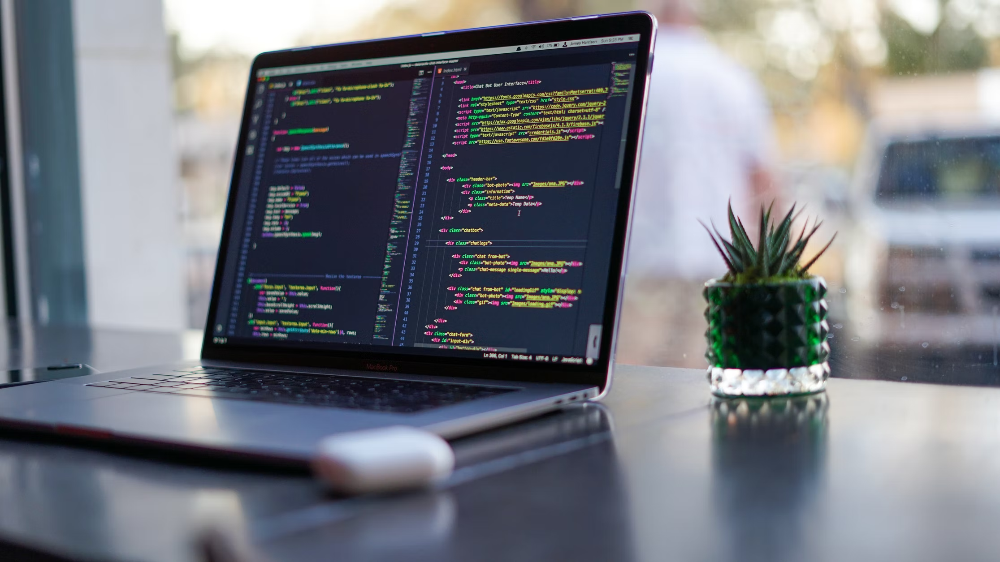
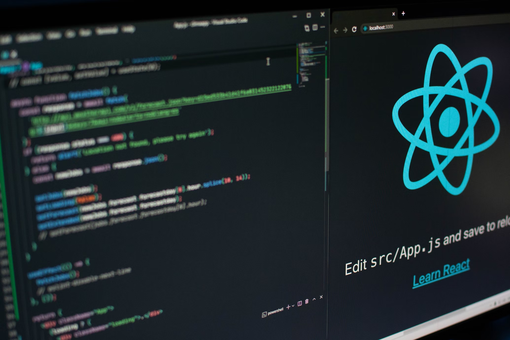

-

July 23, 2022Blog one
I'm excited to start a new learning journey as a Scrimba Bootcamp student! After several months of learning in the Frontend Developer Career Path. -
 July 23, 2022
July 23, 2022Blog two
I'm excited to start a new learning journey as a Scrimba Bootcamp student! After several months of learning in the Frontend Developer Career Path. -
 July 23, 2022
July 23, 2022Blog three
I'm excited to start a new learning journey as a Scrimba Bootcamp student! After several months of learning in the Frontend Developer Career Path. -
 July 23, 2022
July 23, 2022Blog four
I'm excited to start a new learning journey as a Scrimba Bootcamp student! After several months of learning in the Frontend Developer Career Path. -
 July 23, 2022
July 23, 2022Blog five
I'm excited to start a new learning journey as a Scrimba Bootcamp student! After several months of learning in the Frontend Developer Career Path. -

July 23, 2022Blog six
I'm excited to start a new learning journey as a Scrimba Bootcamp student! After several months of learning in the Frontend Developer Career Path.
My learning journal